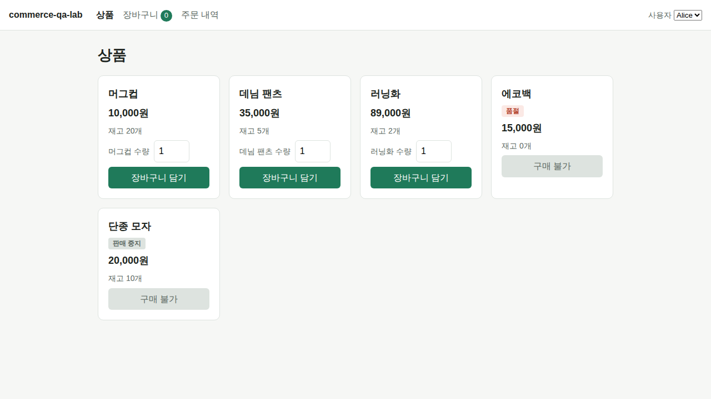

수동 QA에서 버그 리포트에 화면 캡처를 붙이던 것과 같습니다. 검사가 실패하면 무엇을 기대했고 실제로 무엇이었는지, 그 순간 화면은 어땠는지가 자동으로 남습니다.
"주문을 취소해도 재고를 복구하지 않는" 결함을 넣은 Pull Request를 올려, GitHub에서 아래 자료를 실제로 내려받았습니다.

| 파일 | 무엇인가 | 언제 쓰나 |
|---|---|---|
| test-failed-1.png | 실패 순간 화면 사진 | "손님이 무엇을 보고 있었나" 한눈에 확인 |
| trace.zip | 블랙박스 기록 | 클릭·화면 변화·주고받은 데이터를 되감아 보며 원인 추적 |
| error-context.md | 실패 요약 | 기대값·실제값·실패 위치를 글로 정리 |
| playwright-report/ | HTML 성적표 | 전체 결과를 브라우저로 훑어보기 |
실패 메시지 예시: Expected: "재고 3개" / Received: "재고 2개"
개발자에게 "취소가 안 돼요"라고 말하는 것과, 이 한 줄과 사진을 함께 주는 것은 완전히 다릅니다.
| 설정 | 선택 | 이유 |
|---|---|---|
| 스크린샷 | 실패했을 때만 | 성공한 검사까지 찍으면 용량만 커집니다 |
| 트레이스 | 실패했을 때만 보관 | 재시도를 하지 않기 때문에 "재시도 때만 기록" 옵션은 쓸 수 없습니다 |
| 재시도 | 하지 않음 | 가끔 실패하는 검사를 다시 돌려 통과시키면 문제를 덮게 됩니다 |
| 보고서 경로 | API와 E2E 분리 | 같은 폴더에 쓰면 뒤에 돌린 결과가 앞 결과를 덮어씁니다 |
| CI 보관 | 보고서는 항상, 증거는 실패 시 · 14일 | 확인에는 충분하고 저장 공간을 낭비하지 않습니다 |
"보고서 경로 분리"는 CI를 만들면서 발견한 문제였습니다. API 검사 결과 위에 E2E 결과가 덮여 쓰여서, 아티팩트에 E2E 결과만 남아 있었습니다.
docs/defect-examples.md에 실제 발견 결함 6건과, 테스트 검증을 위해 주입한 결함 전체를 기록했습니다. 각 항목은 실무 결함 리포트와 같은 요소를 갖추고 있습니다.
누구나 같은 순서로 재현할 수 있게
무엇이 잘못인지 명확하게
스크린샷, 트레이스, 실패 메시지
추정이 아니라 확인한 원인
고친 내용과, 재발하면 잡아낼 검사
재현되지 않은 지적은 "재현되지 않음"으로 남겼습니다
| 상황 | 증거가 없으면 | 증거가 있으면 |
|---|---|---|
| CI에서만 실패 | "내 컴퓨터에서는 되는데요"에서 대화가 멈춤 | 그 순간의 화면과 데이터를 직접 확인 |
| 가끔 실패하는 검사 | 재시도로 덮고 원인을 모른 채 지나감 | 실패한 실행의 기록으로 타이밍 문제를 찾아냄 |
| 개발자에게 전달 | 말로 설명하며 재현 방법을 묻고 답함 | 파일 하나로 재현 절차와 상태를 전달 |